33.3. Example of Bayesian optimization#
Univariate example#
Here there is only one parameter: \(\theta = \{x\}\).
Show code cell source
Hide code cell source
%matplotlib inline
import numpy as np
import scipy as sp
from scipy.stats import multivariate_normal
import matplotlib.pyplot as plt
import seaborn as sns; sns.set_style("darkgrid"); sns.set_context("talk")
# (removed for sklearn version) import GPy
# (removed for sklearn version) import GPyOpt # This will do the Bayesian optimization
# === Explicit Bayesian Optimization with scikit-learn (no GPy/GPyOpt) ===
# Features:
# - GaussianProcessRegressor with Matern kernel (+ constant + white noise)
# - Acquisition functions: EI, PI, LCB
# - Sequential BO, domain as list of dicts like GPyOpt's domain
# - Plotting for 1D (acquisition & convergence) and basic 2D acquisition heatmap
#
# Usage example (minimization):
# def f(x): return (x**2).sum()
# domain = [{'name':'x1','type':'continuous','domain':(-2,2)}]
# bo = SklearnBO(f, domain, acquisition='EI', random_state=0)
# bo.run(max_iter=20)
# print(bo.X_opt, bo.fx_opt)
#
# If your original code used GPyOpt, replace:
# SklearnBO(...) -> SklearnBO(...)
# bo.run(max_iter=...) -> bo.run(max_iter=...)
# bo.plot_acquisition() -> bo.plot_acquisition()
# bo.plot_convergence() -> bo.plot_convergence()
import numpy as np
from dataclasses import dataclass
from typing import List, Dict, Callable, Optional
from scipy.optimize import minimize
from sklearn.gaussian_process import GaussianProcessRegressor
from sklearn.gaussian_process.kernels import Matern, WhiteKernel, ConstantKernel
import matplotlib.pyplot as plt
import warnings
from sklearn.exceptions import ConvergenceWarning
warnings.filterwarnings("ignore", category=ConvergenceWarning)
def _ensure_2d(X):
X = np.asarray(X, dtype=float)
if X.ndim == 1:
return X.reshape(-1, 1)
return X
def _bounds_from_domain(domain: List[Dict]):
lows, highs = [], []
for d in domain:
a, b = d['domain']
lows.append(float(a)); highs.append(float(b))
return np.column_stack([np.array(lows), np.array(highs)])
def _scale01(X, bounds):
lb = bounds[:,0]; ub = bounds[:,1]
return (X - lb)/(ub-lb)
def _unscale01(Z, bounds):
lb = bounds[:,0]; ub = bounds[:,1]
return Z*(ub-lb) + lb
def _ei(mu, sigma, best, xi=0.01):
from scipy.stats import norm
sigma = np.maximum(sigma, 1e-12)
z = (best - mu - xi)/sigma
return (best - mu - xi)*norm.cdf(z) + sigma*norm.pdf(z)
def _pi(mu, sigma, best, xi=0.0):
from scipy.stats import norm
sigma = np.maximum(sigma, 1e-12)
z = (best - mu - xi)/sigma
return norm.cdf(z)
def _lcb(mu, sigma, kappa=2.0):
return mu - kappa*sigma
# Helper to safely convert anything (float, array, etc.) to a scalar
def _to_scalar(y):
import numpy as np
y = np.asarray(y)
return y.reshape(-1)[0].item()
@dataclass
class _State:
X: np.ndarray
Y: np.ndarray
best_x: np.ndarray
best_y: float
class SklearnBO:
def __init__(self, f: Callable, domain: List[Dict], acquisition='EI',
normalize_X=True, normalize_y=True, random_state: Optional[int]=None,
xi: float=0.01, kappa: float=2.0, initial_samples: int=5):
self.f = f
self.domain = domain
self.bounds = _bounds_from_domain(domain)
self.d = self.bounds.shape[0]
self.normalize_X = normalize_X
self.normalize_y = normalize_y
self.rs = np.random.RandomState(random_state)
self.kind = acquisition.upper()
self.xi = xi
self.kappa = kappa
# Tunable knobs
signal_bounds = (1e-4, 1e6)
length_scale_bounds = (1e-4, 1e5)
noise_bounds = (1e-8, 1e-1) # keep small upper bound to prefer smooth fits
n_restarts = 15
alpha_jitter = 1e-12 # extra numerical stability
kernel = (ConstantKernel(1.0, signal_bounds) *
Matern(length_scale=np.ones(self.d), nu=2.5,
length_scale_bounds=length_scale_bounds)
+ WhiteKernel(noise_level=1e-8,
noise_level_bounds=noise_bounds))
self.gp = GaussianProcessRegressor(
kernel=kernel,
normalize_y=self.normalize_y,
n_restarts_optimizer=n_restarts,
alpha=alpha_jitter,
random_state=random_state
)
self.X = np.empty((0, self.d))
self.Y = np.empty((0, 1))
self.history = []
self._step_dists = [] # ||x_t - x_{t-1}||
self._mu_at_selected = [] # GP mean at x_t at selection time
self._add_initial(initial_samples)
def _sample_uniform(self, n):
u = self.rs.rand(n, self.d)
return _unscale01(u, self.bounds)
def _add_initial(self, n):
X0 = self._sample_uniform(n)
Y0 = np.array([_to_scalar(self.f(x.reshape(1, -1))) for x in X0], dtype=float).reshape(-1, 1)
self.X = np.vstack([self.X, X0])
self.Y = np.vstack([self.Y, Y0])
self._update_state()
def _update_state(self):
i = np.argmin(self.Y.ravel())
best_y = self.Y.ravel()[i].item()
self.state = _State(self.X.copy(), self.Y.copy(), self.X[i].copy(), best_y)
def _fit(self):
Z = _scale01(self.X, self.bounds) if self.normalize_X else self.X
self.gp.fit(Z, self.Y.ravel())
self._refit_if_at_bounds() # try widening and refitting if needed
def _refit_if_at_bounds(self, expand=10.0, max_tries=2):
"""
If any optimized hyperparameter is at a bound, rebuild a new kernel
with widened bounds and refit. Works for kernels of the form:
ConstantKernel * Matern + WhiteKernel
"""
tries = 0
while tries < max_tries:
# Access fitted kernel parts: (Constant*Matern) + White
ksum = self.gp.kernel_ # Sum
kprod = ksum.k1 # Product
kconst = kprod.k1 # ConstantKernel
kmat = kprod.k2 # Matern
kwhite = ksum.k2 # WhiteKernel
# Current values
c_val = float(kconst.constant_value)
ls_val = np.asarray(kmat.length_scale)
nu_val = kmat.nu
n_val = float(kwhite.noise_level)
# Current bounds (linear space)
c_low, c_high = kconst.constant_value_bounds
ls_low, ls_high = kmat.length_scale_bounds
n_low, n_high = kwhite.noise_level_bounds
# Optimized (log) theta and bounds
theta = self.gp.kernel_.theta
bnds = np.array([b for b in self.gp.kernel_.bounds]) # in log space
at_lo = np.isclose(theta, bnds[:, 0])
at_hi = np.isclose(theta, bnds[:, 1])
if not (at_lo.any() or at_hi.any()):
break # nothing at bounds
# Widen each sub-bound in linear space
# (simple: divide lowers by expand, multiply uppers by expand)
c_low2, c_high2 = c_low/expand, c_high*expand
n_low2, n_high2 = n_low/expand, n_high*expand
ls_low2, ls_high2 = np.asarray(ls_low)/expand, np.asarray(ls_high)*expand
# Rebuild a fresh kernel with same current values but wider bounds
new_kernel = (
ConstantKernel(c_val, (c_low2, c_high2)) *
Matern(length_scale=ls_val, nu=nu_val,
length_scale_bounds=(ls_low2, ls_high2)) +
WhiteKernel(noise_level=n_val, noise_level_bounds=(n_low2, n_high2))
)
# Assign and refit
self.gp.kernel = new_kernel
Z = _scale01(self.X, self.bounds) if self.normalize_X else self.X
self.gp.fit(Z, self.Y.ravel())
tries += 1
def _predict(self, Xcand):
Xcand = _ensure_2d(Xcand)
Z = _scale01(Xcand, self.bounds) if self.normalize_X else Xcand
mu, std = self.gp.predict(Z, return_std=True)
return mu, std
def _acq(self, mu, std):
if self.kind in ("EI","EXPECTED_IMPROVEMENT"):
return _ei(mu, std, self.state.best_y, self.xi)
if self.kind in ("PI","MPI","PROBABILITY_OF_IMPROVEMENT"):
return _pi(mu, std, self.state.best_y, self.xi)
if self.kind in ("LCB","UCB","GP_UCB"):
# Maximize acquisition: invert LCB for selection
return -_lcb(mu, std, self.kappa)
raise ValueError(f"Unknown acquisition: {self.kind}")
def _suggest(self, n_restarts=25):
best_val = -np.inf
best_x = None
for x0 in self._sample_uniform(n_restarts):
def obj(x):
x = np.asarray(x).reshape(1,-1)
val = self._acq(*self._predict(x)).item()
return -val # minimize negative acquisition
res = minimize(obj, x0=x0, method="L-BFGS-B", bounds=self.bounds)
val = -res.fun
if val > best_val:
best_val = val
best_x = res.x
if best_x is None:
best_x = self._sample_uniform(1).reshape(-1)
return best_x.reshape(1,-1)
def run(self, max_iter=20, tol=0.0, verbose=False):
for it in range(max_iter):
# Fit model on current data
self._fit()
# Suggest next x and record GP mean at that x
x_next = self._suggest()
mu_next, std_next = self._predict(x_next) # GP mean at selection time
self._mu_at_selected.append(float(np.asarray(mu_next).ravel()[0])) #
# Distance to previous x
if len(self.X) > 0:
prev = self.X[-1].reshape(1, -1)
self._step_dists.append(float(np.linalg.norm(x_next - prev)))
else:
self._step_dists.append(np.nan)
# Evaluate objective
y_next = _to_scalar(self.f(x_next))
self.X = np.vstack([self.X, x_next])
self.Y = np.vstack([self.Y, [[y_next]]])
self._update_state()
if verbose:
print(f"[{it+1:02d}] best={self.state.best_y:.6g}")
if len(self.history) > 1 and abs(self.history[-1] - self.history[-2]) < tol:
break
@property
def X_opt(self):
return self.state.best_x
@property
def fx_opt(self):
return self.state.best_y
def plot_convergence(self):
import numpy as np
import matplotlib.pyplot as plt
# Prefer recorded history; fallback to best-so-far from Y
vals = []
if hasattr(self, "history") and len(self.history) > 0:
vals = list(self.history)
elif hasattr(self, "Y") and self.Y.size > 0:
vals = [float(np.asarray(self.Y).ravel().min())]
if len(vals) == 0:
print("No history yet. Run at least one iteration, e.g. myBopt.run(max_iter=1).")
return
plt.figure(figsize=(6, 3.2))
plt.plot(vals, marker='o')
plt.xlabel("Evaluation")
plt.ylabel("Best-so-far f(x)")
plt.grid(alpha=0.3)
plt.title("Convergence")
plt.show()
def plot_convergence_gpopt_style(self):
"""Two-panel convergence (GPyOpt style):
top: distance between consecutive x's
bottom: GP mean at the selected x_t (at selection time)
"""
import matplotlib.pyplot as plt
if not self._step_dists or not self._mu_at_selected:
print("No history recorded yet. Run at least one iteration.")
return
iters = np.arange(1, len(self._step_dists) + 1)
fig = plt.figure(figsize=(7, 5.2))
ax1 = fig.add_subplot(2, 1, 1)
ax1.plot(iters, self._step_dists, marker='o')
ax1.set_ylabel(r"$\|x_t - x_{t-1}\|$")
ax1.grid(alpha=0.3)
ax1.set_title("Convergence diagnostics")
ax2 = fig.add_subplot(2, 1, 2)
ax2.plot(iters, self._mu_at_selected, marker='o')
ax2.set_xlabel("Iteration")
ax2.set_ylabel(r"GP mean at $x_t$")
ax2.grid(alpha=0.3)
fig.tight_layout()
plt.show()
def plot_acquisition(self, num=300):
if self.d == 1:
self._fit()
xs = np.linspace(self.bounds[0,0], self.bounds[0,1], num).reshape(-1,1)
mu, std = self._predict(xs)
acq = self._acq(mu, std)
fig = plt.figure(figsize=(9,4.8))
ax1 = fig.add_subplot(2,1,1)
ax1.plot(xs, mu, label="GP mean")
ax1.fill_between(xs.ravel(), mu-2*std, mu+2*std, alpha=0.2, label="±2σ")
ax1.scatter(self.X[:,0], self.Y.ravel(), s=20, alpha=0.7, label="evals")
ax1.axvline(self.X_opt[0], ls='--', alpha=0.6, label='x*')
ax1.legend(bbox_to_anchor=(1.05, 1), loc='upper left', borderaxespad=0.)
ax1.set_ylabel("f")
ax2 = fig.add_subplot(2,1,2)
ax2.plot(xs, acq, label=f"{self.kind} (maximize)")
ax2.set_xlabel("x"); ax2.set_ylabel("acq")
ax2.legend(loc='best')
plt.tight_layout(rect=[0, 0, 0.85, 1]) # leave room on the right for the legend
plt.show()
elif self.d == 2:
# coarse acquisition heatmap
self._fit()
n = int(np.sqrt(num))
x1 = np.linspace(self.bounds[0,0], self.bounds[0,1], n)
x2 = np.linspace(self.bounds[1,0], self.bounds[1,1], n)
X1, X2 = np.meshgrid(x1, x2)
grid = np.c_[X1.ravel(), X2.ravel()]
mu, std = self._predict(grid)
acq = self._acq(mu, std).reshape(n, n)
plt.figure(figsize=(5,4))
plt.imshow(acq, origin='lower', extent=[x1.min(), x1.max(), x2.min(), x2.max()], aspect='auto')
plt.colorbar(label="acq")
plt.scatter(self.X[:,0], self.X[:,1], s=20, c='k', alpha=0.6, label='evals')
plt.scatter([self.X_opt[0]], [self.X_opt[1]], marker='*', s=120, label='x*')
plt.xlabel("x1"); plt.ylabel("x2"); plt.legend(loc='best')
plt.title(f"{self.kind} acquisition (maximize)")
plt.show()
else:
print("plot_acquisition: implemented for 1D and 2D only.")
import numpy as np
def backfill_history(bo):
"""
Rebuilds the best-so-far history from existing evaluation data.
Use this if myBopt.history is empty but you already have myBopt.X and myBopt.Y.
"""
if not hasattr(bo, "Y") or bo.Y.size == 0:
print("No evaluations yet to backfill from.")
return
y = np.asarray(bo.Y).ravel()
best_so_far = np.minimum.accumulate(y)
bo.history = [float(v) for v in best_so_far]
bo._convergence = list(bo.history)
print(f"Backfilled history with {len(bo.history)} points.")
def _patched_update_state(self):
import numpy as np
# pick current best index and value
idx = int(np.argmin(self.Y.ravel()))
best_y = float(np.asarray(self.Y).ravel()[idx])
# set state
self.state = type("State", (), {})()
self.state.best_y = best_y
self.state.best_x = self.X[idx].copy()
# ensure lists exist
if not hasattr(self, "history") or self.history is None:
self.history = []
if not hasattr(self, "_convergence") or self._convergence is None:
self._convergence = []
# append to both (keep in sync with older code paths)
self.history.append(best_y)
self._convergence.append(best_y)
# apply patch
SklearnBO._update_state = _patched_update_state
print("SklearnBO._update_state patched to always fill history and _convergence.")
xmin = 0.
xmax = 1.
def Ftrue(x):
"""Example true function, with two local minima in [0,1]."""
return np.sin(4*np.pi*x) + x**4
# For this problem, it is easy to find a local minimum using with SciPy, but
# it may not be within [0,1]!
np.random.seed() # (123)
x0 = np.random.uniform(xmin, xmax) # pick a random starting guess in [0,1]
result = sp.optimize.minimize(Ftrue, x0) # use scipy to minimize the function
print(result)
# Plot the function and the minimum that scipy found
X_domain = np.linspace(xmin,xmax,1000)
fig, ax = plt.subplots(1, 1, figsize=(8,6))
ax.plot(X_domain, Ftrue(X_domain))
ax.plot(result.x[0], result.fun, 'ro')
ax.set(xlabel=r'$x$', ylabel=r'$f(x)$');
# parameter bound(s)
bounds = [{'name': 'x_1', 'type': 'continuous', 'domain': (xmin,xmax)}]
# We'll consider two choices for the acquisition function, expectived
# improvement (EI) and lower confidence bound (LCB)
# my_acquisition= 'EI'
# #my_acquisition= 'LCB'
# # Creates GPyOpt object with the model and aquisition function
# myBopt = SklearnBO(\
# f=Ftrue, # function to optimize
# initial_design_numdata=1, # Start with two initial data
# domain=bounds, # box-constraints of the problem
# acquisition=my_acquisition, # Selects acquisition type
# exact_feval = True)
my_acquisition = 'EI' # or 'LCB', 'PI'
myBopt = SklearnBO(
f=Ftrue,
domain=bounds,
acquisition=my_acquisition,
initial_samples=4, # ← was initial_design_numdata
random_state=0
) # drop exact_feval
# Run the optimization
np.random.seed() # (123)
max_iter = 1 # evaluation budget (max_iter=1 means one step at a time)
max_time = 60 # time budget
eps = 1.e-6 # minimum allowed distance between the last two observations
SklearnBO._update_state patched to always fill history and _convergence.
message: Optimization terminated successfully.
success: True
status: 0
fun: -0.9803640091846975
x: [ 3.737e-01]
nit: 4
jac: [-2.980e-08]
hess_inv: [[ 6.268e-03]]
nfev: 14
njev: 7
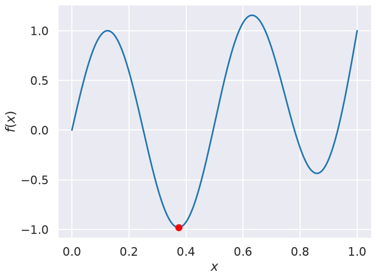
Now we can use the myBopt.run one step at a time (meaning we add one point per iteration), plotting the GP mean (solid black line) and 95% variance (gray line) and the acquisition function in red using plot_acquisition. The maximum of the acquisition function, which will be the choice for \(x\) in the next iteration, is marked by a vertical red line.
What can you tell about the GP used as a surrogate for \(f(x)\)?
Note how the GP is refined (updated) with additional points.
Show code cell source
Hide code cell source
# run for num_iter iterations
num_iter = 15
print('Starting with 4 points')
for i in range(num_iter):
print("Iteration ", i)
myBopt.run(max_iter=1, tol=0.0, verbose=False) # run one BO step per loop
myBopt.plot_acquisition()
Starting with 4 points
Iteration 0
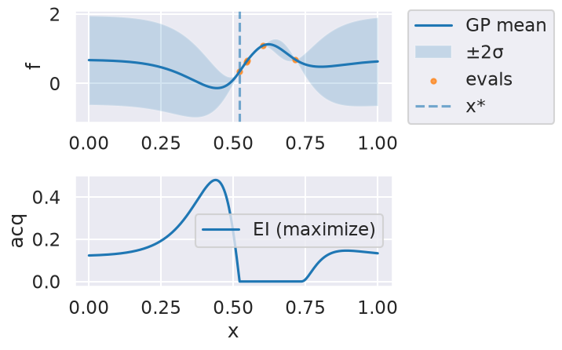
Iteration 1
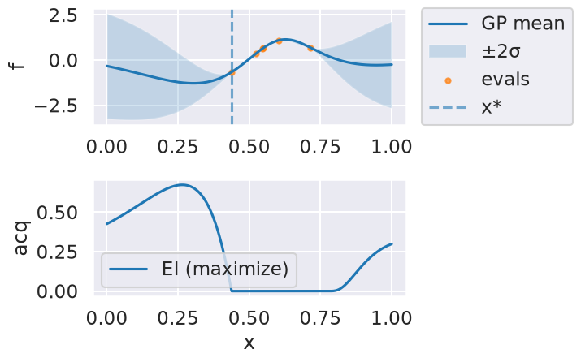
Iteration 2
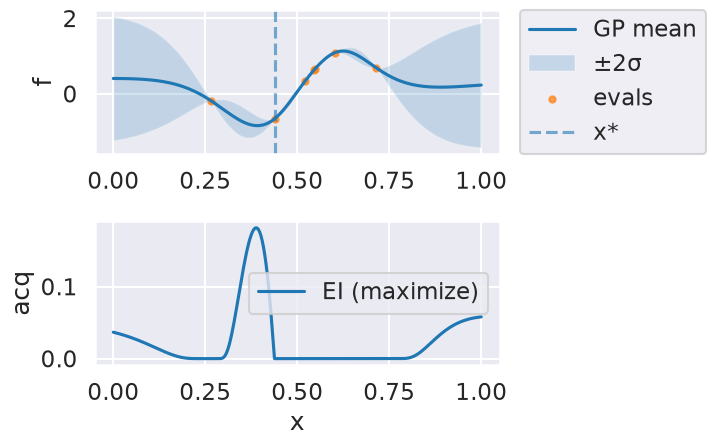
Iteration 3
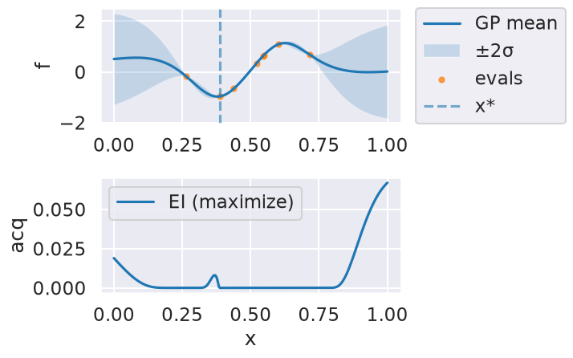
Iteration 4
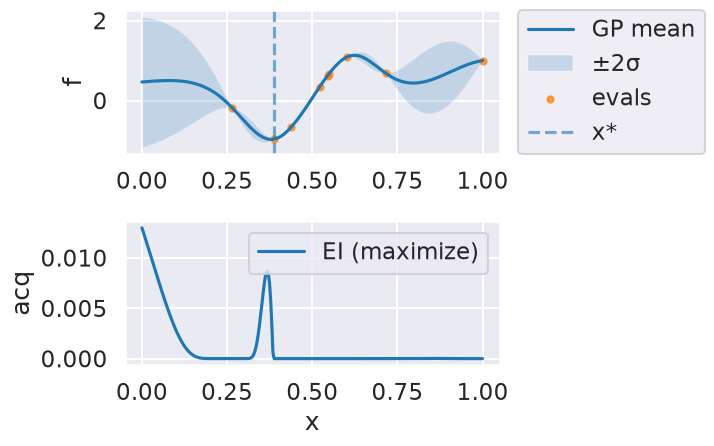
Iteration 5
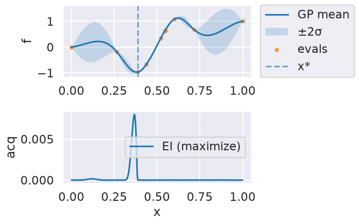
Iteration 6
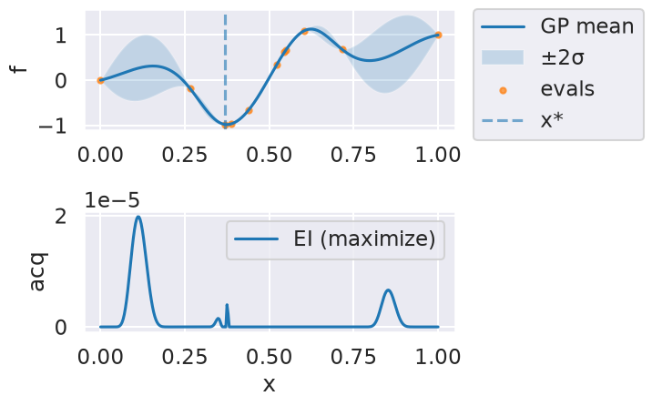
Iteration 7
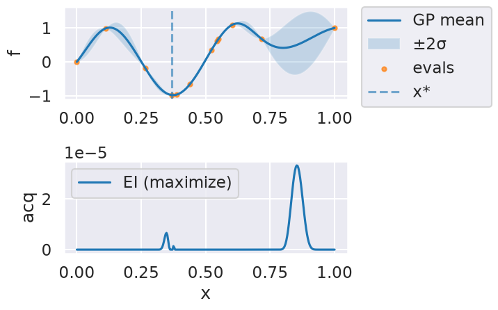
Iteration 8
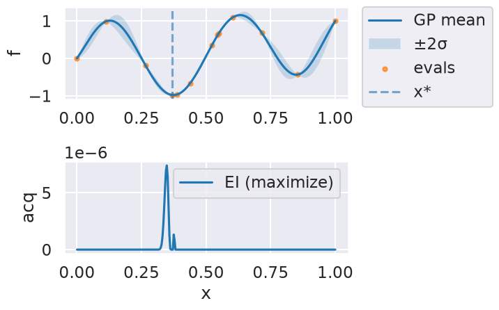
Iteration 9
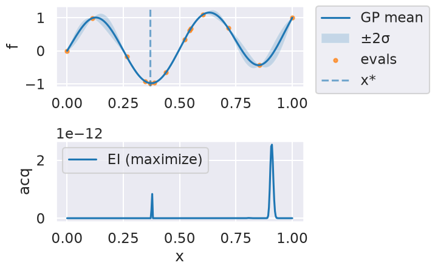
Iteration 10
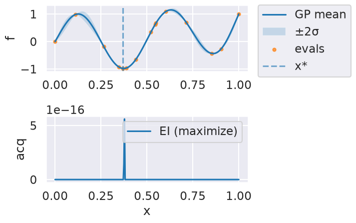
Iteration 11
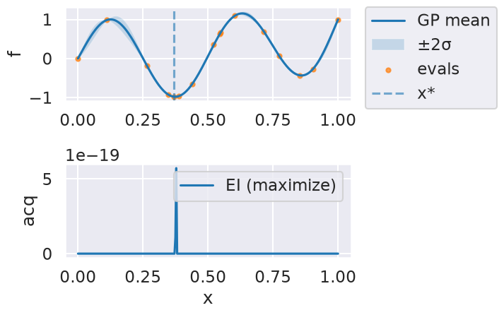
Iteration 12
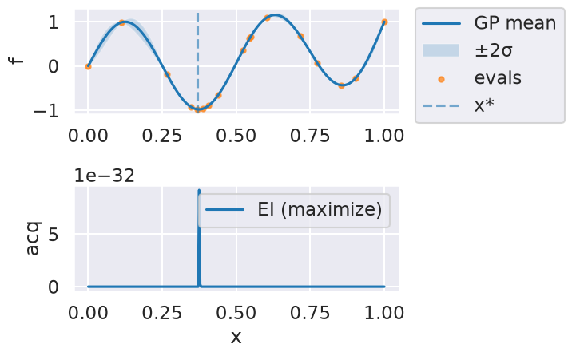
Iteration 13
Iteration 14
Show code cell source
Hide code cell source
print("len(history) =", len(myBopt.history))
print("X shape =", getattr(myBopt, "X", None).shape if hasattr(myBopt, "X") else None)
print("Y shape =", getattr(myBopt, "Y", None).shape if hasattr(myBopt, "Y") else None)
# From the docstring:
# Makes two plots to evaluate the convergence of the model:
# plot 1: Iterations vs. distance between consecutive selected x's
# plot 2: Iterations vs. the mean of the current model in the selected sample.
myBopt.plot_convergence() # best-so-far f(x)
myBopt.plot_convergence_gpopt_style() # two-panel style like GPyOpt
print(f'Optimal x value = {myBopt.X_opt}')
print(f'Minimized function value = {myBopt.fx_opt:.5f}')
len(history) = 16
X shape = (19, 1)
Y shape = (19, 1)
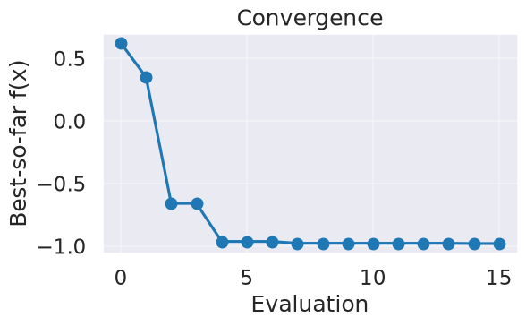
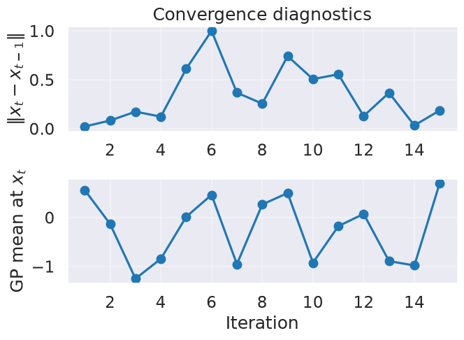
Optimal x value = [0.37381314]
Minimized function value = -0.98036
Bivariate example (two parameters)#
Next, we try a 2-dimensional example. In this case we minimize the Six-hump camel function
in \([−3,3]\), \([−2,2]\). This functions has two global minimum, at (0.0898, −0.7126) and (−0.0898, 0.7126), with function value -1.0316. The function is already pre-defined in GPyOpt. In this case we generate observations of the function perturbed with white noise of first of sd=0.01 and then sd=0.1.
Show code cell source
Hide code cell source
import numpy as np
import matplotlib.pyplot as plt
class SixHumpCamel:
"""Drop-in replacement for GPyOpt.objective_examples.experiments2d.sixhumpcamel"""
bounds = [(-3.0, 3.0), (-2.0, 2.0)]
def __init__(self, sd: float = 0.0, random_state: int | None = None):
self.sd = float(sd)
self.rng = np.random.RandomState(random_state)
@staticmethod
def _sixhump(xy: np.ndarray) -> np.ndarray:
xy = np.asarray(xy, dtype=float)
x, y = xy[..., 0], xy[..., 1]
return ((4 - 2.1 * x**2 + (x**4)/3.0) * x**2
+ x * y
+ (-4 + 4 * y**2) * y**2)
def f(self, X):
X = np.asarray(X, dtype=float)
if X.ndim == 1:
val = self._sixhump(X)
if self.sd > 0:
val = val + self.sd * self.rng.randn()
return float(np.asarray(val).reshape(-1)[0])
else:
vals = self._sixhump(X).reshape(-1)
if self.sd > 0:
vals = vals + self.sd * self.rng.randn(*vals.shape)
return vals
def plot(self, num=300, kind='contour', vmin=None, vmax=None,
clip_quantiles=(0.05, 0.95), overlay=None, show_minima=True,
cmap='viridis'):
"""
Visualize the six-hump camel function.
Parameters
----------
num : int
Grid resolution (num x num).
kind : {'contour','surface'}
Plot type.
vmin, vmax : float or None
Color/height limits. If None, set from data quantiles given by clip_quantiles.
clip_quantiles : (low, high)
Quantiles in [0,1] used to auto-limit color scale when vmin/vmax not given.
overlay : None, ndarray, or object with attribute .X
If ndarray, interpreted as shape (n,2) sample locations to overlay.
If object has .X (e.g., your SklearnBO instance), those points are overlaid.
show_minima : bool
If True, mark the two global minima with red stars.
cmap : str
Matplotlib colormap name.
"""
import numpy as np
import matplotlib.pyplot as plt
# Build grid and evaluate
x1 = np.linspace(self.bounds[0][0], self.bounds[0][1], num)
x2 = np.linspace(self.bounds[1][0], self.bounds[1][1], num)
X1, X2 = np.meshgrid(x1, x2)
X = np.c_[X1.ravel(), X2.ravel()]
Z = self._sixhump(X).reshape(num, num)
# Auto color limits if not supplied
if vmin is None or vmax is None:
lo, hi = np.percentile(Z, [100*clip_quantiles[0], 100*clip_quantiles[1]])
if vmin is None: vmin = lo
if vmax is None: vmax = hi
# Resolve overlay points
overlay_pts = None
if overlay is not None:
if isinstance(overlay, np.ndarray):
overlay_pts = np.asarray(overlay, dtype=float).reshape(-1, 2)
elif hasattr(overlay, "X"):
overlay_pts = np.asarray(overlay.X, dtype=float).reshape(-1, 2)
# Known global minima (for reference/teaching)
mins = np.array([[0.0898, -0.7126], [-0.0898, 0.7126]])
if kind == 'surface':
from mpl_toolkits.mplot3d import Axes3D # noqa: F401
fig = plt.figure(figsize=(7, 5.5))
ax = fig.add_subplot(111, projection='3d')
surf = ax.plot_surface(X1, X2, Z, cmap=cmap, linewidth=0, antialiased=True,
alpha=0.95)
# keep z-limits aligned with color scaling to emphasize humps
ax.set_zlim(vmin, vmax)
fig.colorbar(surf, shrink=0.8, pad=0.1, label='f(x)')
ax.set_xlabel('x1'); ax.set_ylabel('x2'); ax.set_zlabel('f(x)')
ax.set_title('Six-Hump Camel (surface)')
# Overlay samples
if overlay_pts is not None and overlay_pts.size:
Zs = self._sixhump(overlay_pts)
ax.scatter(overlay_pts[:,0], overlay_pts[:,1], Zs, s=30, c='k', depthshade=False, label='samples')
# Overlay minima
if show_minima:
Zm = self._sixhump(mins)
ax.scatter(mins[:,0], mins[:,1], Zm, marker='*', s=140, c='red', label='global minima')
if (overlay_pts is not None and overlay_pts.size) or show_minima:
ax.legend(loc='upper left')
plt.tight_layout()
plt.show()
return
# Default: contour plot
fig = plt.figure(figsize=(8.6, 5.2))
cs = plt.contourf(X1, X2, Z, levels=60, cmap=cmap, vmin=vmin, vmax=vmax)
plt.colorbar(cs, label='f(x)')
# light contour lines to give shape
plt.contour(X1, X2, Z, levels=12, colors='k', alpha=0.25, linewidths=0.7)
# Overlay samples
if overlay_pts is not None and overlay_pts.size:
plt.scatter(overlay_pts[:,0], overlay_pts[:,1], s=24, c='k', label='samples', alpha=0.9)
# Overlay minima
if show_minima:
plt.scatter(mins[:,0], mins[:,1], c='red', marker='*', s=120, label='global minima')
plt.xlabel('x1'); plt.ylabel('x2')
plt.title('Six-Hump Camel (contour, auto-scaled)')
if (overlay_pts is not None and overlay_pts.size) or show_minima:
# put legend outside to avoid obscuring details
plt.legend(bbox_to_anchor=(1.05, 1), loc='upper left', borderaxespad=0.)
plt.tight_layout(rect=[0, 0, 0.85, 1])
else:
plt.tight_layout()
plt.show()
# create the object function (2D example)
f_true = SixHumpCamel(sd=0.0) # noiseless “true” objective
#f_true.plot()
#f_true.plot(kind='surface', clip_quantiles=(0.05, 0.9))
f_sim = SixHumpCamel(sd=0.1) # noisy simulator
bounds = [
{'name': 'var_1', 'type': 'continuous', 'domain': f_true.bounds[0]},
{'name': 'var_2', 'type': 'continuous', 'domain': f_true.bounds[1]},
]
# run Bayesian optimization using the explicit sklearn version
myBopt2D = SklearnBO(
f=f_sim.f, # pass the callable
domain=bounds,
acquisition='EI', # or 'LCB', 'PI'
initial_samples=8,
random_state=0
)
myBopt2D.run(max_iter=20, tol=0.0, verbose=False)
myBopt2D.plot_acquisition() # 2D heatmap in our implementation
myBopt2D.plot_convergence()
f_true.plot(overlay=myBopt2D) # or overlay=myBopt2D.X
f_true.plot(kind='surface', overlay=myBopt2D.X)
print("X* =", myBopt2D.X_opt, " f* =", myBopt2D.fx_opt)
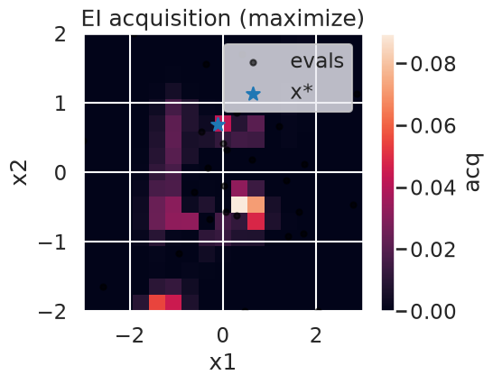
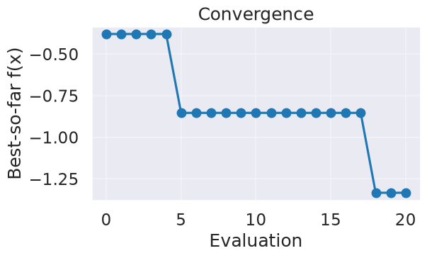
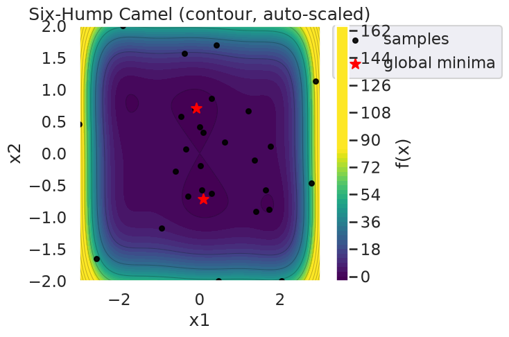
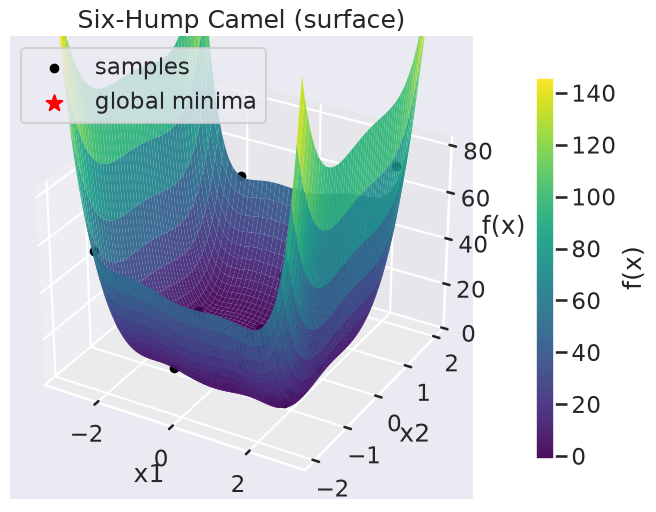
X* = [-0.11648439 0.69654517] f* = -1.333730714700159